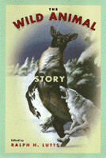

<body bgcolor="#FFFFFF" text="#000000" link="#0000FF" vlink="#CC0000" alink="#CC0000"><center><hr width="350" size="1" align="center" noshade>An anthology of some of the most celebrated animal stories ever collected<hr width="350" size="1" align="center" noshade><p><a href="https://cdcshoppingcart.uchicago.edu/Cart/ChicagoBook.aspx?ISBN=9781566395939&&PRESS=temple" target="_top">Buy this book!</a> | <a href="https://cdcshoppingcart.uchicago.edu/Cart/Cart.aspx?PRESS=temple" target="_top">View Cart</a> | <a href="https://cdcshoppingcart.uchicago.edu/Cart/Cart.aspx?PRESS=temple" target="_top">Check Out</a></p><p></p></center><!--none//--><h1>The Wild Animal Story</h1>
<h3>edited by Ralph H. Lutts</h3>
<P>cloth 1-56639-593-3 $81.50, Apr 98, <FONT COLOR=#990033>Out of Print</FONT>
<br>paper 1-56639-918-1 $29.95, Sep 01, <FONT COLOR=#990033>Available</FONT>
<br>Electronic Book 1-43990-150-3 $29.95 <FONT COLOR=#990033>Out of Print</FONT>
<BR> 328 pp
6x9
4&nbsp;figures 15&nbsp;halftones
</P><h3 align="center"><P><font color="#996633">Association of American University Presses Book Jacket Award,
1999</font></P>
</H3>
<BLOCKQUOTE><I>"A marvelous collection of turn-of-the-century animal stories...</I>The Wild Animal Story<I> is well conceived, sensibly organized, admirably complete, and judiciously framed. One hopes that this indispensable and fascinating sourcebook will inspire renewed critical attention to this promising area of research."</I>
<br>&#151<b><I>ISLE</I></b><I></I></BLOCKQUOTE>
<p>At the beginning of the twentieth century, the wild animal story emerged in Canadian literature as a distinct genre, in which animals pursue their own interests&#151survival for themselves, their offspring, and perhaps a mate, or the pure pleasure of their wildness.
<p>Bringing together some of the most celebrated wild animal stories, Ralph H. Lutts places them firmly in the context of heated controversies about animal intelligence and purposeful behavior. Widely regarded as entertaining and educational, the early stories&#151by Charles G. D. Roberts, Ernest Thompson Seton, John Muir, Jack London and others&#151had an avid readership among adults and children. But some naturalists and at least one hunter&#151Theodore Roosevelt&#151discredited these writers as "nature fakers," accusing them of falsely portraying animal behavior.
<p>The stories and commentaries collected here span the twentieth century. As present day animal behaviorists, psychologists, and the public attempt to sort out the meaning of what animals do and our obligations to them, Ralph Lutts maps some of the prominent features of our cultural landscape.
<p>Tales include:
<ul>
<li><p><I>The Springfield Fox</I> by Ernest Thompson Seton
<li><p><I>The Sounding of the Call</I> by Jack London
<li><p><I>Stickeen</I> by John Muir
<li><p><I>Journey to the Sea</I> by Rachel Carson</ul>
<p>Other selections include esssays by Theoore Roosevelt, John Burroughs, Margaret Atwood, and Ralph H. Lutts.
<BR>&nbsp;<h2>Excerpt</h2><P>Excerpt available at <a href="http://www.temple.edu/tempress">www.temple.edu/tempress</a></p>
<BR>&nbsp;<h2>Reviews</h2>
<p><i>"...an invaluable sourcebook of information about the 'nature fakers' controversy that engaged many of the leading figures in natural history at the turn of the century.... Given the inaccessibility of many of the documents it collects, as well as the thoroughness with which it presents them, </i>The Wild Animal Story<i> would make an excellent classroom resource..."</i>
<br>&#151<b><i><a href="http://www.findarticles.com/p/articles/mi_qa3854/is_199901/ai_n8851758" target="new">Environmental History</a></i></b>
<BR>&nbsp;<h2>Contents</h2><P>
<p>Preface
<br>1. The Wild Animal Story: Animals and Ideas &#150 Ralph H. Lutts
<p><b>Part I: Tales</b>
<br>2. On His Animal Stories &#150 Charles G. D. Roberts
<br>3. Do Seek Their Meat from God &#150 Charles G. D. Roberts
<br>4. The Rivals of Ringwaak &#150 Charles G. D. Roberts
<br>5. On His Animal Stories &#150 Ernest Thompson Seton
<br>6. Lobo: The King of the Currumpaw &#150 Ernest Thompson Seton
<br>7. The Springfield Fox &#150 Ernest Thompson Seton
<br>8. On His Animal Stories &#150 William J. Long
<br>9. A School for Little Fishermen &#150 William J. Long
<br>10. Trails That Cross in the Snow &#150 William J. Long
<br>11. A Woodcock Genius &#150 William J. Long
<br>12. The Sounding of the Call &#150 Jack London
<br>13. Stickeen &#150 John Muir
<br>14. Journey to the Sea &#150 Rachel L. Carson
<p><b>Part II: Controversy</b>
<br>15. Real and Sham Natural History &#150 John Burroughs
<br>16. The Modern School of Nature-Study and Its Critics &#150 William J. Long
<br>17. The Fate of Little Mucky &#150 Ernest Thompson Seton
<br>18. The Writings of William J. Long &#150 W. F. Ganong
<br>19. Truth Plain and Coloured &#150 W. H. Hudson
<br>20. Nature as a Field for Fiction &#150 Mabel Osgood Wright
<br>21. Roosevelt on the Nature Fakirs &#150 Edward B. Clark
<br>22. "I Propose to Smoke Roosevelt Out" &#150 Dr. Long
<br>23. Charles G.D. Roberts Defends His Nature Stories
<br>24. Real Naturalists on Nature Faking &#150 Edward B. Clark
<br>25. "Nature Fakers" &#150 Theodore Roosevelt
<br>26. The Other Animals &#150 Jack London
<br>27. Chipmunk Thoughts &#150 John Burroughs
<p><b>Part III: Interpretations</b>
<br>28. Animal Victims &#150 Margaret Atwood
<br>29. The Revolt Against Instinct: The Animal Stories of Seton and Roberts &#150 Robert H. MacDonald
<br>30. The Realistic Animal Story: Ernest Thompson Seton, Charles Roberts, and Darwinism &#150 Thomas R. Dunlap
<br>31. Stickeen and the Moral Education of John Muir &#150 Ronald H. Limbaugh
<br>32. Will the Real Wild Animal Please Stand Up! The Nature Fakers &#150 Ralph H. Lutts
<p>About the Writers
<br>Index
<br>Illustrations
</P><BR>&nbsp;<H2>About the Author(s)</H2>
<table><tr><td valign="top"><img src="/tempress/authors/1331_au.gif" height="90" width="75"></td><td width="100%" valign="middle"><p><b>Ralph H. Lutts</b>, Associate Faculty, Goddard College Off-Campus BA./MA Program and Adjunct Faculty, University of Virginia, Division of Continuing Education, is the author of <I>The Nature Fakers: Wildlife, Science, and Sentiment</I>.</P></td></tr></table>
<BR><H2>Subject Categories</H2>
<p><A HREF="/tempress/general.html" TARGET="_top">General Interest</a>
<BR><A HREF="/tempress/nature.html" TARGET="_top">Nature and the Environment</a>
<BR><A HREF="/tempress/animal_soc.html" TARGET="_top">Animals and Society</a>
</p>
<BR><h2 class="inpageheading">In the series</H2>
<P><I><a href="http://www.temple.edu/tempress/animals.html" onMouseOver="window.status='Click for other books in this series!'; return true;" onMouseOut="window.status=''; return true;" target="_top">Animals, Culture, and Society</a></i>, edited by Arnold Arluke and Clinton R. Sanders.
</p><p><I>Animals, Culture, and Society</I>, edited by Arnold Arluke and Clinton R. Sanders, is concerned with probing the complex and contradictory human-animal relationship through the publication of accessible books that consider the place of animals in our culture, our literature, our society, and our homes.</p>
<p align="center"><a href="https://cdcshoppingcart.uchicago.edu/Cart/ChicagoBook.aspx?ISBN=9781566395939&&PRESS=temple" target="_top">Buy this book!</a> | <a href="https://cdcshoppingcart.uchicago.edu/Cart/Cart.aspx?PRESS=temple" target="_top">View Cart</a> | <a href="https://cdcshoppingcart.uchicago.edu/Cart/Cart.aspx?PRESS=temple" target="_top">Check Out</a></p><p><font face="Arial" size="1"><a href="copyright.html" onMouseOver="window.status='Web Copyright Policy';return true;" onMouseOut="window.status=''" title="Web Copyright Policy">&copy;</a> 2015 <a href="http://www.temple.edu" target="new" onMouseOver="window.status='Link to Temple University home page';return true;" onMouseOut="window.status=''" title="Link to Temple University home page">Temple University</a>. All Rights Reserved. http://www.temple.edu/tempress/titles/1331_reg.html</font></p>